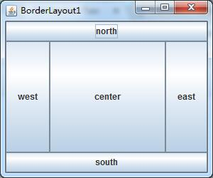
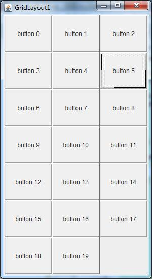
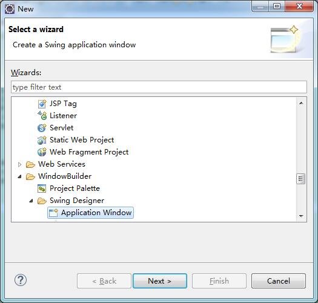
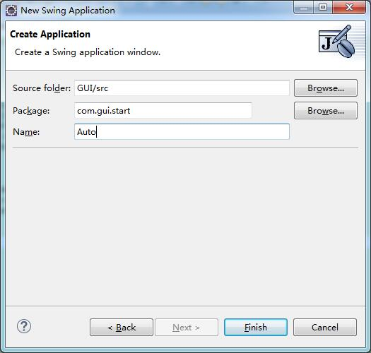
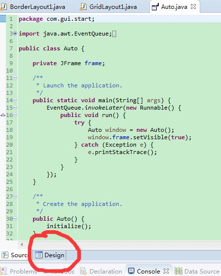
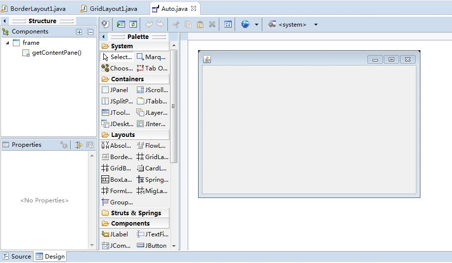
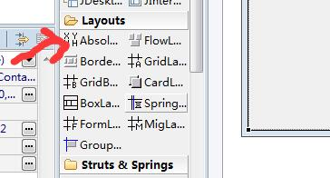
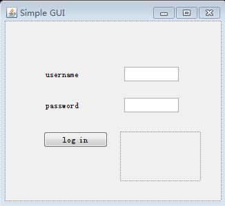

本次讨论的是GUI的布局，作为例子，首先使用的是BorderLayout，代码和效果如下
//:com/gui/start/BorderLayout1.java
package com.gui.start;
import javax.swing.*;
import java.awt.*;
public class BorderLayout1 extends JFrame{
public BorderLayout1() {
add(BorderLayout.CENTER, new JButton("center"));
add(BorderLayout.EAST, new JButton("east"));
add(BorderLayout.WEST, new JButton("west"));
add(BorderLayout.NORTH, new JButton("north"));
add(BorderLayout.SOUTH, new JButton("south"));
}
public static void main(String[] args) {
// TODO Auto-generated method stub
SwingConsole.run(new BorderLayout1(), 300, 250);
}
}

JFrame使用的默认布局也是BorderLayout，它会将窗口分为5个部分 FlowLayout的布局已经在之前讨论过：从左到右，从上到下合适布局
然后展示的是GridLayout：
//:com/gui/start/GridLayout1.java
package com.gui.start;
import java.awt.*;
import javax.swing.*;
public class GridLayout1 extends JFrame{
public GridLayout1() {
setLayout(new GridLayout(7, 3)); //将窗口分为7 * 3的区域进行布局
for(int i = 0; i < 20; i++) {
add(new Button("button " + i));
}
}
public static void main(String[] args) {
// TODO Auto-generated method stub
SwingConsole.run(new GridLayout1(), 300, 550);
}
}

这种切割方式会在布局时产生空白区域。
以上几种方式的布局都不好控制，为了能够更好和更加灵活完成GUI控件的布局，采用eclipse自动化插件windowbuilder 插件的安装方式省略，接下来的步骤用于说明该插件的使用方式
step1 创建一个Application Window
  step2 从代码区转换到设计窗口
  step3 使用AbsoultLayout进行布局操作
  一个简单的GUI界面就搭建完成了，实现不同功能将在之后的部分讨论